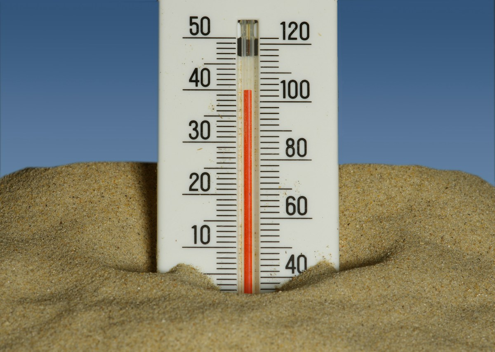
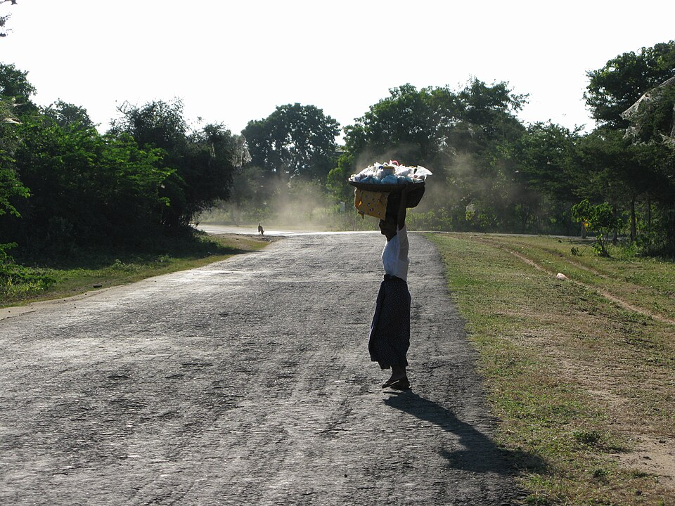

Sunlight becomes electricity
Roof-mounted panels generate power during daylight, including when the grid is unavailable.
Myanmar's heat warnings are based on the heat index, which accounts for humidity alongside air temperature; in Yangon, an alert is triggered when the index remains above the local 90th percentile for more than three consecutive days. Applied to historical conditions, this threshold would have produced warnings in 2012, 2013, 2019 and 2020, while the severe 2010 heatwave, which resulted in 230 fatalities, would not have met the trigger because the heat index remained below the required level despite daily temperatures reaching 47 degrees Celsius.
The hypothalamus helps regulate core temperature by increasing blood flow to the skin and triggering sweat. As sweat evaporates, it carries heat away from the body.

Painful muscle spasms can follow heavy sweating and the loss of fluid and salts. Stop activity, rest somewhere cool, and sip water or an electrolyte drink if fully alert.
Weakness, headache, nausea, dizziness and heavy sweating can signal worsening heat strain. Move to a cool place, loosen clothing, cool the skin and sip fluids. Seek medical care if symptoms worsen or do not improve.
Confusion, seizures, fainting or collapse can mean the body's temperature control is failing; heatstroke can develop without a preceding stage. Call emergency services and begin rapid cooling immediately. Do not give fluids to someone who is confused or unconscious.
In humid air, sweat evaporates more slowly, so less heat leaves the body even when a person is sweating heavily. As heat exposure continues, fluid loss strains circulation and salt loss can trigger painful cramps; heat exhaustion may follow, and heatstroke is a life-threatening emergency.
Heatstroke often raises core temperature to 40°C (104°F) or higher and can disrupt brain function. It requires emergency care and immediate cooling.
Source: U.S. Centers for Disease Control and Prevention / About Heat and Your Health
Myanmar / Heat impacts
Extreme heat reaches far beyond the thermometer. It can put pressure on essential services, livelihoods and the places people call home.
Essential services
Hot days increase demand for fans, cooling and refrigeration. Heat can also reduce the efficiency of some power generation, while drought may constrain hydropower. When supply cannot keep pace, blackouts can interrupt cooling, water pumping and other essential services.
Water and reservoirs
Long dry spells and increased evaporation can worsen drought conditions. Lower river flows and depleted reservoirs put pressure on drinking water and irrigation, particularly where supplies are already limited.
Farms and livelihoods
Heat and water stress can damage crops and reduce yields, especially when extreme temperatures coincide with sensitive growing stages. Livestock may eat less, become less productive and face greater risk of heat illness, affecting farmers' incomes and food supplies.
Cities after sunset
Concrete, asphalt and dense buildings absorb heat through the day and release it slowly. With less shade and greenery, cities can stay warmer than nearby areas, especially at night, leaving people with less relief and time to recover.
Health / Community care
Some people face greater danger during a heatwave because their bodies respond differently to heat, they have ongoing health needs, or they cannot easily reach a cooler place. Regular, practical contact can help them get support early.

Who may need closer support
Age, reduced mobility and some medicines can make it harder to notice heat or cool down. Check whether they have drinking water, a cooler room and a way to ask for help.
Babies depend on adults to keep them cool and hydrated. Caregivers should watch for feeding changes, fewer wet nappies, unusual sleepiness or irritability.
Pregnancy can increase the strain of heat and dehydration. Help make time for rest in a cooler place, keep water nearby and follow advice from a maternity care provider.
People working in direct sun or hot indoor spaces may have limited control over their hours. Make water, shaded rest breaks and a plan to stop work if someone becomes unwell part of the day's routine.
Heart, lung and kidney conditions, diabetes and some medicines can affect the body's response to heat. Encourage people to follow their clinician's heat plan and not change prescribed medicines without medical advice.
Map / Myanmar
Explore the interactive Myanmar heatwaves map. Use the fullscreen control to expand the map.